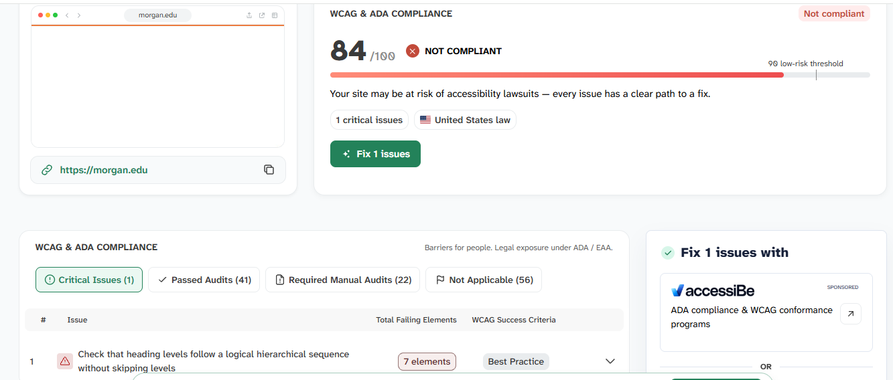

What is the name of the website?
Morgan State University
What is the URL of the website?
Who is the site's target audience?
Morgan State University's website targets current students, prospective students, staff, faculty and anyone who wants to learn about the university.
How is this site organized
The website is well organized and has many navigation links, making information easy to find and the interface easy to use. There are lots of creative images that make the website appealing.
Which CRAP Design Principle does the site use?
Morgan State's website uses contrast and repetition. Most of the pages consist of a white background, the same font, and dark colored letters, making the content easy to read. The website repeatedly uses dark blue navigation links, orange dotted outlines, and white backgrounds throughout the website to represent the university's school colors.
What is the Audit Score according to the Accessibility Checker
The website received an audit score of 84 out of 100. It was marked as not compliant and had issues with heading hierarchy.

What is the site's effectiveness?
Morgan State's website is effective. The information helps users accomplish their personal goal for being on the site. For example, currently enrolled students can easily access their email and canvas, while prospective students can access how to apply and admissions.
What is the site's efficiency?
Morgan State's website is efficient. Users can quickly navigate through the website using the many navigation links. The navigation links are bolded and easy to find. The website also has a search option on the menu, which acts as a shortcut, avoiding multiple pages.
How is the engagement?
The website is pleasant to use. It does a good job summarizing and presenting important information relative to the user. The content is consistent with its heading. The font and size of the text make reading less overwhelming. The images are neatly displayed and the design makes the university seem welcoming.
Recommendations
I would recommend fixing the heading hierarchy. The Accessibility Checker mentions 7 elements being affected by the header hierarchy not following logical order. This could improve navigating through the website easier.